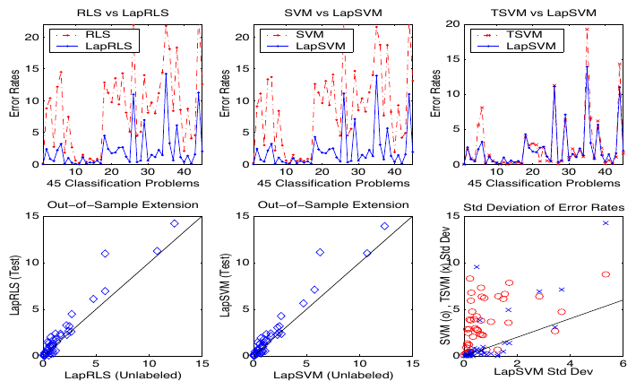
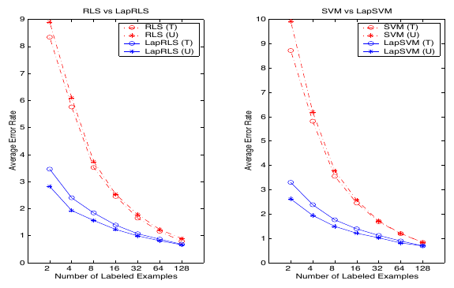
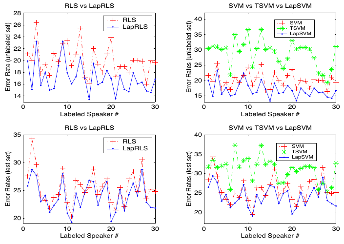
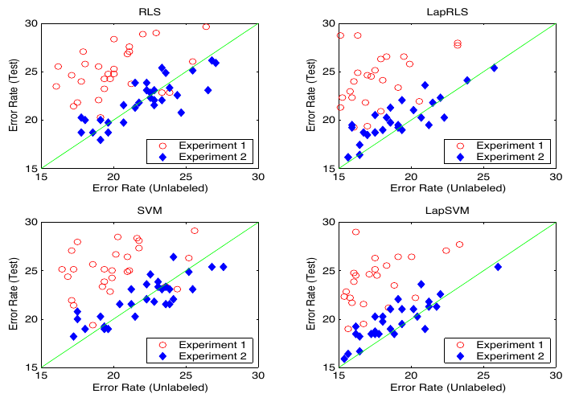
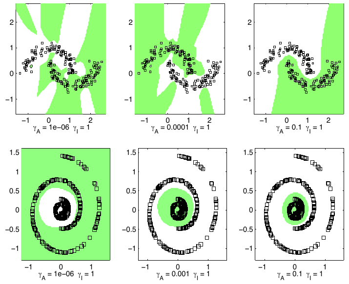

Paper: Belkin, Niyogi, and Sindhwani, “Manifold Regularization: A
Geometric Framework for Learning from Labeled and Unlabeled Examples,”
JMLR 7:2399-2434, 2006. Reviewer: Reviewer-P06 Auditor: Auditor-P06
Status: revised after audit Date: 2026-05-15 Source manifest ID: P06
Canonical reading copy:
sources/pdf/P06_belkin_niyogi_sindhwani_manifold_regularization.pdf;
SHA-256
f83f892575a6596aa587e3eddce1b7600f58e2eb9cad4e11ef141d3e8092efc6;
36 pages; JMLR PDF from
https://www.jmlr.org/papers/volume7/belkin06a/belkin06a.pdf.
W, degree matrix D,
and graph Laplacian \(L = D - W\) in
Equation (4), p. 2405 (PDF p. 7).contextual Spectral methods and low-pass graph
smoothing intuition help a great deal: the intrinsic term suppresses
rapid variation across high-weight graph edges, so it biases solutions
toward low graph-frequency functions.contextual For the experiments, the reader benefits
from knowing precision-recall break-even point (PRBEP), USPS digit
classification, Isolet spoken-letter data, WebKB text classification,
kNN graphs, cosine similarity/distance in text, and RBF/polynomial
kernels.This paper asks how a learner should use unlabeled points when labels are scarce. The authors’ answer is: unlabeled data estimate the geometry of the input distribution, and a good prediction function should change slowly along that geometry. The key example is Figure 1, p. 2402 (PDF p. 4): with only one positive and one negative label, a linear separator looks natural; after seeing many unlabeled points arranged in rings, a circular boundary looks simpler in the data geometry. The paper formalizes this by adding a graph/manifold smoothness penalty to the usual RKHS regularized risk.
There are two notions of smoothness. “Extrinsic” smoothness is the ordinary RKHS norm in the ambient input space and is controlled by \(gamma_{A}\). “Intrinsic” smoothness is smoothness along the support of the marginal distribution, often a manifold or its sampled graph, and is controlled by \(gamma_{I}\). The resulting algorithms, LapRLS and LapSVM, keep the kernel-method ability to predict at new points while using a graph Laplacian over labeled plus unlabeled points to impose geometric smoothness.
\(explicit\) The paper proposes
“data-dependent regularization that exploits the geometry of the
probability distribution” and focuses mainly on semi-supervised
learning; see Section 1, p. 2399-2400 (PDF pp. 1-2). Its motivating
assumption is stated in Section 2: if two points are close in the
intrinsic geometry of the marginal distribution \(P_{X}\), then P(y|x) should be
similar; equivalently, the conditional distribution varies smoothly
along geodesics in that intrinsic geometry, p. 2403 (PDF p. 5).
\(explicit\) The paper positions itself as a unification of three traditions: spectral graph theory, manifold learning, and RKHS regularization; see the numbered overview in Section 1, pp. 2400-2401 (PDF pp. 2-3). Its central methodological contribution is not a new graph construction alone, but a regularized risk framework in which graph/manifold smoothness appears as an extra penalty while an ambient RKHS supplies out-of-sample extension.
\(explicit\) The authors distinguish their framework from purely graph-based transductive methods, arguing that RKHS representer theorems give a natural function on the ambient input space for novel examples; see Section 1, item 4, p. 2401 (PDF p. 3), and Section 4.5, pp. 2419-2420 (PDF pp. 21-22).
\(explicit\) Standard regularization minimizes
\[ \begin{aligned} f\, &= argmin_{f in H_{K}} (1/l) sum_{i=1}^l V(x_{i}, y_{i}, f) + gamma \Vert f\Vert _K^2, \end{aligned} \]
with solution \(f\,(x) = sum_{i=1}^l alpha_{i} K(x_{i}, x)\) by the classical representer theorem; see Equation (1), p. 2403 (PDF p. 5).
\(explicit\) Manifold regularization adds an intrinsic penalty:
\[ \begin{aligned} f\, &= argmin_{f in H_{K}} (1/l) sum_{i} V(x_{i}, y_{i}, f) \\ + gamma_{A} \Vert f\Vert _K^2 + gamma_{I} \Vert f\Vert _I^2. \end{aligned} \]
Here \(gamma_{A}\) controls ambient RKHS complexity and \(gamma_{I}\) controls intrinsic complexity with respect to \(P_{X}\); see Equation (2), p. 2404 (PDF p. 6).
\(explicit\) In the manifold case, a natural intrinsic penalty is
\[ \begin{gathered} int_{x in M} \Vert nabla_{M} f\Vert ^2 dP_{X}(x), \end{gathered} \]
where \(M = supp(P_{X})\) and \(nabla_{M}\) is the manifold gradient; see Section 2.2, p. 2404 (PDF p. 6). The empirical approximation uses a graph Laplacian over the \(l + u\) labeled and unlabeled points; see Equation (4), p. 2405 (PDF p. 7).
\(explicit\) The paper derives two main algorithm families: Laplacian Regularized Least Squares (LapRLS), Section 4.2, pp. 2414-2415 (PDF pp. 16-17), and Laplacian Support Vector Machines (LapSVM), Section 4.4, pp. 2416-2418 (PDF pp. 18-20).
\(explicit\) Known marginal representer theorem: if \(\Vert f\Vert _I\) is sufficiently smooth with respect to the RKHS norm, the solution has the form
\[ \begin{aligned} f\,(x) &= sum_{i=1}^l alpha_{i} K(x_{i}, x) \\ + int_{M} \alpha(z) K(x, z) dP_{X}(z). \end{aligned} \]
This is Theorem 1 / Equation (3), p. 2404 (PDF p. 6), with a more precise operator version in Theorem 7 / Equation (7), p. 2410 (PDF p. 12).
\(explicit\) Empirical graph objective:
\[ \begin{aligned} f\, &= argmin_{f in H_{K}} (1/l) sum_{i=1}^l V(x_{i}, y_{i}, f) \\ + gamma_{A} \Vert f\Vert _K^2 \\ + gamma_{I}/(u+l)^2 sum_{i,j&=1}^{l+u} (f(x_{i})-f(x_{j}))^2 W_{ij} \\ &= \argmin \ldots + gamma_{I}/(u+l)^2 f^T L f. \end{aligned} \]
See Equation (4), p. 2405 (PDF p. 7). The normalizing coefficient \((u+l)^-2\) is described there as the natural empirical scale factor and may be replaced by \(sum_{i,j} W_{ij}\) on sparse graphs.
\(explicit\) Empirical representer theorem: the minimizer of Equation (4) admits
\[ \begin{aligned} f\,(x) &= sum_{i=1}^{l+u} alpha_{i} K(x_{i}, x), \end{aligned} \]
over both labeled and unlabeled points; see Theorem 2 / Equation (5), p. 2405 (PDF p. 7), with proof in Section 3.4, pp. 2412-2413 (PDF pp. 14-15).
\(explicit\) LapRLS finite-dimensional solution:
\[ \begin{aligned} \alpha\, &= (J K + gamma_{A} l I + gamma_{I} l/(u+l)^2 L K)^-1 Y. \end{aligned} \]
Here K is the \((l+u) x
(l+u)\) Gram matrix, \(Y =
[y_{1},\ldots,y_{l},0,\ldots,0]\), and J is diagonal
with ones for labeled entries and zeros for unlabeled entries; see
Section 4.2 and Equation (8), p. 2414 (PDF p. 16).
\(explicit\) LapSVM uses an SVM dual with a modified quadratic form
\[ \begin{aligned} Q &= Y J K (2 gamma_{A} I + 2 gamma_{I}/(l+u)^2 L K)^-1 J^T Y, \end{aligned} \]
and obtains expansion coefficients by
\[ \begin{aligned} \alpha &= (2 gamma_{A} I + 2 gamma_{I}/(l+u)^2 L K)^-1 J^T Y \beta\,. \end{aligned} \]
See Equations (10)-(12), pp. 2417-2418 (PDF pp. 19-20).
\(explicit\) Algorithm summary:
Table 1, p. 2418 (PDF p. 20), instructs the user to construct an
adjacency graph, choose edge weights, choose an ambient kernel
K, compute \(L = D - W\),
choose \(gamma_{A}\) and \(gamma_{I}\), solve LapRLS or LapSVM, and
output \(f\,(x) = sum_{i} alpha_{i}\, K(x_{i},
x)\).
\(explicit\) Unsupervised regularized spectral clustering / data representation is sketched by minimizing \(gamma \Vert f\Vert _K^2 + sum_{i~j} (f(x_{i})-f(x_{j}))^2\) under centering and normalization constraints; see Equation (13), p. 2428 (PDF p. 30). Substitution yields generalized eigenproblem
\[ \begin{aligned} P (gamma K + K L K) P v &= \lambda P K^2 P v, \end{aligned} \]
Equation (14), p. 2428 (PDF p. 30).
\(explicit\) Figure 1, p. 2402 (PDF p. 4), is a conceptual two-panel example: unlabeled points change the visually natural decision boundary from a roughly linear separator to a circular/ring-respecting classifier. It motivates the entire geometry-sensitive regularization framework.
\(explicit\) Figure 2, p. 2421 (PDF p. 23), shows two-moons LapSVM decision surfaces with RBF kernels as \(gamma_{I}\) increases from 0 to 0.01 to 1 while \(gamma_{A} = 0.03125\). The visual point is that increasing intrinsic regularization makes the separator wrap around the data geometry rather than follow only the two labeled points.

\(explicit\) Figure 3, p. 2421 (PDF p. 23), compares best decision surfaces on two moons for SVM, TSVM, and LapSVM. It shows LapSVM producing a manifold-respecting boundary comparable to or better than TSVM while retaining the RKHS out-of-sample function form.
\(explicit\) USPS handwritten digit experiments, Section 5.2, pp. 2421-2423 (PDF pp. 23-25), use 45 pairwise digit classification tasks, 2 labeled images per class and 398 unlabeled images, polynomial degree-3 kernels, and a 1:9 split of regularization weight between ambient and intrinsic terms. Figure 4, p. 2422 (PDF p. 24), reports lower PRBEP error rates for LapRLS/LapSVM than RLS/SVM across most pairwise tasks, confirms out-of-sample behavior through test-versus-unlabeled scatter plots, and compares variability with TSVM. Table 3, p. 2422 (PDF p. 24), gives one-vs-rest multiclass errors: SVM 23.6, TSVM 26.5, LapSVM 12.7, RLS 23.6, LapRLS 12.7. Figure 5, p. 2423 (PDF p. 25), shows error decreasing with more labeled examples and manifold methods retaining an advantage at small label counts.


\(explicit\) Isolet spoken-letter experiments, Section 5.3, pp. 2423-2425 (PDF pp. 25-27), train on Isolet1 and test on Isolet5 for 30 speaker-defined splits, using RBF kernels with width \(\sigma = 10\). Figure 6, p. 2424 (PDF p. 26), shows LapRLS/LapSVM improving on unlabeled training speakers and more modest but consistent improvements on test speakers. Figure 7 and Table 4, p. 2425 (PDF p. 27), compare test versus unlabeled errors and report one-vs-rest 26-class error rates: SVM 28.6 unlabeled / 36.9 test, TSVM 46.6 / 43.3, LapSVM 24.5 / 33.7, RLS 28.3 / 36.3, LapRLS 24.1 / 33.3.


\(explicit\) WebKB text classification, Section 5.4, pp. 2425-2427 (PDF pp. 27-29), uses 1051 web pages, course versus non-course, 3000 TFIDF features, unit-normalized vectors, linear kernels, and cosine-distance graph weights. In the first WebKB experiment, Table 5, p. 2426 (PDF p. 28), reports transductive PRBEP/error averages over 100 realizations with 12 labeled examples: SVM 76.39 / 10.41, TSVM 88.15 / 5.22, LapSVM 87.73 / 5.41, RLS 73.49 / 11.68, LapRLS 86.37 / 5.99. The authors caution that some comparator protocols differ. Figure 8, p. 2427 (PDF p. 29), shows PRBEP increasing with labeled examples and investigates different unlabeled-set sizes; unlabeled performance improves with more unlabeled data, but test performance does not always improve because fixed parameters can become suboptimal.

\(explicit\) Figures 9 and 10, p. 2429 (PDF p. 31), illustrate the unsupervised Section 6.1 regularized spectral clustering idea on two moons and two spirals as \(gamma_{A}\) increases with \(gamma_{I} = 1\). These figures show the ambient RKHS penalty changing the smoothness and geometry of cluster-indicator-like functions.

\(explicit\) The paper’s main theoretical claim is a pair of representer theorems. The known-marginal version, Theorem 1 / Equation (3), p. 2404 (PDF p. 6), and the more technical Theorem 7 / Equation (7), p. 2410 (PDF p. 12), show that an intrinsic penalty can still lead to a kernel-plus-integral representation. The empirical graph version, Theorem 2 / Equation (5), p. 2405 (PDF p. 7), shows the solution is an expansion over all labeled and unlabeled data points.
\(explicit\) Section 3.1, pp. 2407-2408 (PDF pp. 9-10), develops RKHS/integral-operator machinery. Lemma 3, p. 2408 (PDF p. 10), characterizes when a function can be represented as \(L_{K} g\) using eigenvalues of the integral operator. This is used in the proof of the known-marginal representer theorem.
\(explicit\) Lemma 4, p. 2409 (PDF
p. 11), identifies the closure \(S = span{K(x,
.): x in M}\) and its orthogonal complement; functions in \(S^perp\) vanish on M. Lemma 5,
p. 2409 (PDF p. 11), then shows the minimizer lies in S
when the intrinsic norm depends only on the restriction to
M.
\(explicit\) Proposition 6, p. 2409
(PDF p. 11), is important for interpretation: if the intrinsic norm is
simply the RKHS norm of the restriction to M, then the
minimizer is the same as ordinary regularization with a different
combined regularization parameter. The paper uses this to argue that a
distinct intrinsic smoothness measure is required.
\(explicit\) Theorem 8 and Corollary
9, pp. 2411-2412 (PDF pp. 13-14), show that when M is a
smooth compact manifold and D is a smooth differential
operator such as a Laplace-Beltrami operator, the boundedness conditions
needed by Theorem 7 hold. Corollary 10, p. 2412 (PDF p. 14), states a
Sobolev regularity consequence for \(L_{K}^(1/2)\).
contextual The paper does not prove graph Laplacian
convergence in detail. It states that under certain conditions
exponential adjacency weights lead to convergence of the graph Laplacian
to the Laplace-Beltrami operator or a weighted version, and points to
Belkin (2003), Lafon (2004), Belkin and Niyogi (2005), Coifman et
al. (2005), and Hein et al. (2005); see Section 2.2, p. 2405 (PDF
p. 7).
\(explicit\) The framework depends
on a relation between the marginal geometry and the conditional
distribution. Section 2, p. 2403 (PDF p. 5), explicitly says unlabeled
data are unlikely to help if no identifiable relation exists between
\(P_{X}\) and P(y|x).
\(explicit\) The authors note that using only an intrinsic regularizer is ill-posed because the true manifold/marginal is unavailable and only sampled points are observed; see Remark 2, p. 2406 (PDF p. 8). This is a central reason for including the ambient RKHS penalty.
\(explicit\) Graph construction, weights, graph scale, \(gamma_{A}\), and \(gamma_{I}\) are model-selection choices. Section 7, p. 2430 (PDF p. 32), says the authors do not yet have a good understanding of how to choose the extrinsic and intrinsic regularization parameters.
\(explicit\) Computational scalability is a limitation. Section 4.4, p. 2417 (PDF p. 19), notes that naive dense Gram-matrix implementations require \(O((l+u)^3)\) complexity. Section 7, p. 2430 (PDF p. 32), repeats that large-scale scalability remains open.
\(explicit\) Generalization and convergence theory are incomplete. Section 7, p. 2430 (PDF p. 32), says the dependence of generalization error on numbers of labeled and unlabeled examples is poorly understood.
\(explicit\) Experimental claims are suggestive rather than exhaustive. Section 5.4, p. 2426 (PDF p. 28), explicitly cautions that exact datasets and protocols differ for some WebKB comparator results, so those comparisons are meant only to suggest state-of-the-art-like performance.
derived The empirical graph regularizer inherits all the
usual sensitivity of graph Laplacian methods: neighbor graph topology,
bandwidth/weight scale, normalization, and density effects can alter the
low-frequency functions. The paper acknowledges this indirectly through
graph-weight choices, normalized Laplacian comments, and model-selection
concerns, but does not systematize graph-construction selection.
\(explicit\) This is a canonical paper for graph-Laplacian regularization inside kernel methods. It gives a clean objective in which the graph Laplacian is not merely a transductive label-propagation device but an intrinsic regularizer combined with an ambient RKHS penalty.
\(explicit\) The paper is historically important for distinguishing graph transduction from semi-supervised out-of-sample learning. The empirical representer theorem expands over labeled plus unlabeled points, but the final predictor is still \(f\,(x) = sum_{i} alpha_{i} K(x_{i}, x)\), so new points can be evaluated without rerunning the graph algorithm; see Theorem 2 / Equation (5), p. 2405 (PDF p. 7), and Table 1, p. 2418 (PDF p. 20).
contextual For H005, its importance is the formulation
of graph Laplacian smoothing as a regularization term \(f^T L f\), with explicit graph construction
and weight choices, rather than a paper about shortest-path graph
lengths or geodesic-distance embedding.
\[ \begin{aligned} W_{ij} &= \exp(-\Vert x_{i} - x_{j}\Vert ^2 / 4t). \end{aligned} \]
See Table 1, p. 2418 (PDF p. 20).
M; small-time
heat kernels are close to Gaussians in geodesic coordinates and can be
approximated by sharp Gaussians in ambient space; see Remark 1, p. 2405
(PDF p. 7).derived In H005 conductance vocabulary, \(W_{ij}\) behaves as graph conductance
because it multiplies squared differences in the Dirichlet energy: high
\(W_{ij}\) strongly penalizes variation
across edge (i,j), while low or zero \(W_{ij}\) weakly penalizes or disconnects
the pair. The authors call these “edge weights,” not
“conductances.”\(explicit\) The empirical intrinsic operator is the graph Laplacian \(L = D - W\); the penalty is \(f^T L f\) inside Equation (4), p. 2405 (PDF p. 7). The paper also discusses normalized \(D^{-1/2} L D^{-1/2}\) in Remark 3, p. 2406 (PDF p. 8), and uses that normalized form in experiments.
\(explicit\) The continuum intrinsic operator is the manifold Laplace-Beltrami operator \(\Delta_{M}\) or weighted Laplace-Beltrami operator, connected to the Dirichlet energy \(int_{M} \Vert nabla_{M} f\Vert ^2 d \mu\); see Remark 1, p. 2405 (PDF p. 7).
\(explicit\) The diffusion operator appears as the heat semigroup \(e^{-t \Delta_{M}}\), described as smoothing/Brownian motion on the manifold; see Remark 1, p. 2405 (PDF p. 7). This is an intrinsic regularizer option, not the main empirical operator used in LapRLS/LapSVM experiments.
\(explicit\) Primary task: semi-supervised classification/regression with labeled plus unlabeled examples, using LapRLS and LapSVM; see Sections 2 and 4.
\(explicit\) Related tasks: transductive inference and out-of-sample semi-supervised prediction; see Section 4.5 and Table 2, p. 2420 (PDF p. 22). The authors claim graph regularization and label propagation are recovered in limiting regimes of \(gamma_{A}\) and \(gamma_{I}\).
\(explicit\) Secondary tasks: unsupervised regularized spectral clustering and data representation, Section 6.1, pp. 2428-2429 (PDF pp. 30-31), and fully supervised class-dependent intrinsic regularization, Section 6.2, pp. 2429-2430 (PDF pp. 31-32).
derived The intrinsic graph regularizer is a low-pass
graph-signal prior: it favors functions with small energy over
high-weight edges, i.e. functions whose values vary slowly over the data
graph.derived The ambient RKHS term is a stabilizer and
extension mechanism: it prevents the sampled-manifold problem from being
ill-posed and defines behavior away from the observed vertices.derived The graph weight/bandwidth choice is
effectively a choice of what geometric variations are expensive. Heat
weights, binary kNN weights, cosine weights, and iterated Laplacians
encode different assumptions about locality, density, and feature space
geometry.\(explicit\) The continuum penalty \(int_{M} \Vert nabla_{M} f\Vert ^2\) is tied to the Laplace-Beltrami operator through the identity \(int_{M} f \Delta_{M} f d\\mu = int_{M} \Vert nabla_{M} f\Vert ^2 d\\mu\), p. 2405 (PDF p. 7). Thus the penalty suppresses components with large Laplacian energy.
derived In the graph case, \(f^T L f\) suppresses graph high-frequency
components. Increasing \(gamma_{I}\)
pushes the predictor toward functions that are smoother over the graph,
as directly visualized in Figure 2, p. 2421 (PDF p. 23), where larger
\(gamma_{I}\) reshapes the two-moons
decision surface.
\(explicit\) In the unsupervised setting, the paper obtains a generalized eigenproblem, Equation (14), p. 2428 (PDF p. 30), and notes that multiple eigenvectors give a regularized out-of-sample extension of Laplacian Eigenmaps. This makes the eigenfunction/spectral interpretation explicit.
contextual Normalized Laplacian use in experiments means
the effective smoothing is degree-normalized rather than raw
unnormalized Dirichlet smoothing; see Remark 3, p. 2406 (PDF p. 8). This
matters for density effects.
\(explicit\) The paper uses fixed examples such as k-nearest-neighbor graphs, graph kernels, binary weights, heat-kernel weights, cosine-distance weights for text, and iterated Laplacians. See Table 1, p. 2418 (PDF p. 20), and Section 5.4, p. 2426 (PDF p. 28).
contextual It does not develop
self-tuned/local-bandwidth kernels, adaptive-radius graphs, continuous
bandwidth selection, or cKNN-style density normalization. Those topics
belong more directly to P01, P03, P04, P08, P09, and P10 in the H005
plan.
derived The paper is still relevant to adaptive-scale
graph construction because any adaptive weight matrix can be inserted
into the same \(f^T L f\) regularizer.
The representer theorem and LapRLS/LapSVM algebra care about
L, not about whether L came from fixed
bandwidth, kNN, local bandwidth, or another construction.
P(y|x).contextual It does not claim its graph weights are
metric edge lengths or inverse-length conductances. The paper’s graph
weights are affinities used in a Laplacian regularizer.contextual It does not claim to optimize
geodesic-distance reconstruction or graph-to-layout isometry. Its use of
manifold geometry is for function regularization and semi-supervised
prediction.\(explicit\) The paper provides the clean classical reference for a graph Laplacian smoothness term in a learning objective: \(f^T L f\), with graph weights controlling how strongly edgewise differences are penalized. This is directly relevant to H005’s question of how conductance/kernel choices affect low-pass smoothing.
derived For SIMODS, the paper supports describing
graph-signal smoothing as a regularization problem where conductance
choices change the preferred low-frequency functions. Its most
transferable formula is Equation (4), p. 2405 (PDF p. 7), plus the
practical algorithm summary in Table 1, p. 2418 (PDF p. 20).
contextual Current fit.rdgraph.regression()
semantics must be kept distinct. The H005 planning notes state that the
current gflow low-pass operator for precomputed graphs uses
supplied weight.list values as positive edge lengths for
ordering/truncation, then uses Riemannian-complex edge masses from
local-neighborhood overlaps with conductance \(c_{e}^\rho = 1/\max(rho_{1}(e), 1e-10)\).
That is not the same as the paper’s heat/cosine/binary affinity \(W_{ij}\) and not the same as a planned
direct length conductance \(c_{e}^len =
1/(ell_{e} + \epsilon)\).
derived The paper is best cited for the general
principle “a graph Laplacian affinity matrix defines a smoothness
regularizer” and for the intrinsic/extrinsic split. It should not be
cited as evidence that the current rdgraph overlap-density
smoother is a length-conductance method. It can motivate planned
comparators: run the same graph-signal smoothing criterion with direct
length conductances, heat-kernel conductances, and the current
overlap-density conductance, then compare selection behavior.
Reproduced cropped figure panels for Figures 1–10 are managed by
paper_figure_screenshots.yml and embedded in the generated
HTML memo next to the primary figure descriptions. These are
internal-review cropped figure panels from the canonical reading copy,
not manuscript-ready reused figures.
No original explanatory figure was created. A useful optional figure
for synthesis would be a three-edge toy graph showing how the same
topology gives different \(f^T L f\)
smoothing under binary weights, heat weights, inverse-length
conductance, and current gflow overlap-density conductance,
but that cross-paper synthesis figure is better created after the
P01-P10 audit pass.
| Claim | Label | Source reference | Notes |
|---|---|---|---|
| Manifold regularization adds intrinsic geometric smoothness to standard RKHS regularization. | explicit | Eq. (2), p. 2404 (PDF p. 6) | \(gamma_{A}\) ambient, \(gamma_{I}\) intrinsic. |
| Empirical intrinsic penalty is a graph Laplacian quadratic form over labeled plus unlabeled data. | explicit | Eq. (4), p. 2405 (PDF p. 7) | Uses W, D, \(L =
D - W\), and \(f^T L f\). |
| The solution expands over labeled and unlabeled points. | explicit | Theorem 2 / Eq. (5), p. 2405 (PDF p. 7); proof Section 3.4, pp. 2412-2413 | Key out-of-sample bridge. |
| Graph construction can use kNN or graph kernels; weights can be binary or heat weights. | explicit | Table 1, p. 2418 (PDF p. 20) | Heat weight is \(\exp(-\Vert x_{i}-x_{j}\Vert ^2/4t)\). |
| Normalized Laplacian is interchangeable in formulas and used in all empirical studies. | explicit | Remark 3, p. 2406 (PDF p. 8) | Important density/degree normalization note. |
LapRLS has closed-form coefficient equation involving
J K, L K, \(gamma_{A}\), and \(gamma_{I}\). |
explicit | Eq. (8), p. 2414 (PDF p. 16) | Useful for algorithm extraction. |
LapSVM modifies the SVM dual quadratic form through
L K. |
explicit | Eqs. (10)-(12), pp. 2417-2418 (PDF pp. 19-20) | Solves one QP in labeled dual variables plus a linear system. |
| Unlabeled data help only under a marginal-conditional smoothness relation. | explicit | Section 2, p. 2403 (PDF p. 5) | Scope condition. |
| Only intrinsic regularization is ill-posed on a sampled manifold; ambient regularization is needed. | explicit | Remark 2, p. 2406 (PDF p. 8) | Important for current graph-smoother comparisons. |
| The paper leaves model selection and generalization theory unresolved. | explicit | Section 7, p. 2430 (PDF p. 32) | Includes \(gamma_{A}\), \(gamma_{I}\), labeled/unlabeled dependence. |
| \(W_{ij}\) can be interpreted as conductance for H005 because it weights squared edge differences. | derived | Eq. (4), p. 2405 (PDF p. 7) | The authors say “edge weights,” not “conductance.” |
| The paper is not about direct metric edge-length conductance. | contextual | Table 1, Eq. (4), Section 5.4 | Weight examples are affinities/cosine/binary/heat, not \(1/length\). |
Current gflow overlap-density smoothing differs from
this paper’s affinity Laplacian and from planned length-conductance
comparators. |
contextual | H005 execution plan and non-oracle graph selection inventory | Included to prevent SIMODS scope drift. |
W, many graph-Laplacian conventions have
\(f^T L f = (1/2) sum_{i,j} W_{ij}
(f_{i}-f_{j})^2\), while the paper writes the double sum as \(f^T L f\). Determine whether the authors
silently absorb a factor of 2 or use a different summation
convention.Auditor-P06 requested an explicit Eq. (4) factor-convention note. The PDF prints the unhalved double sum as \(f^\top L f\); under the standard symmetric-Laplacian convention the double sum has a \(1/2\) factor. The scaling does not alter the regularizer minimizer but should be named.
Preserve the ambiguity in the WebKB description “weighted by cosine distances”: the PDF does not specify the exact affinity transform.
Historical/canonical-importance statements should be labeled
contextual or derived, not \(explicit\), unless quoting the paper’s own
claims.
Sparse-graph normalization should stay close to the PDF wording; do not convert it into a precise implementation rule without another source.
2026-05-15: Initial Reviewer-P06 memo drafted from the canonical 36-page JMLR PDF. I inspected all figures/tables by rendering the relevant pages locally and did not store any copied paper figures.